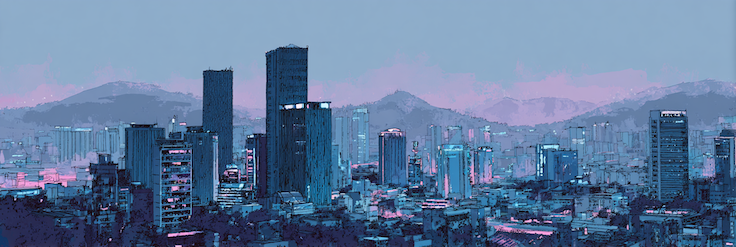
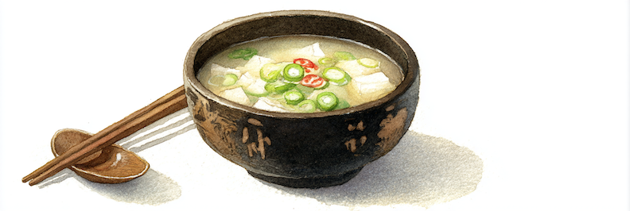
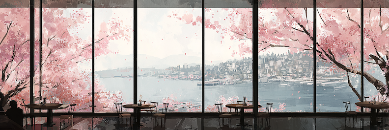
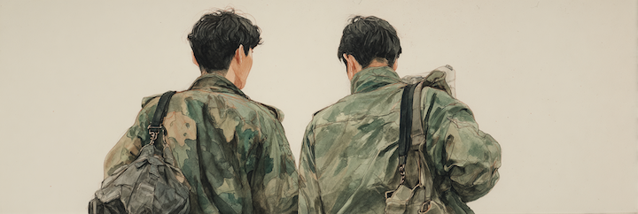
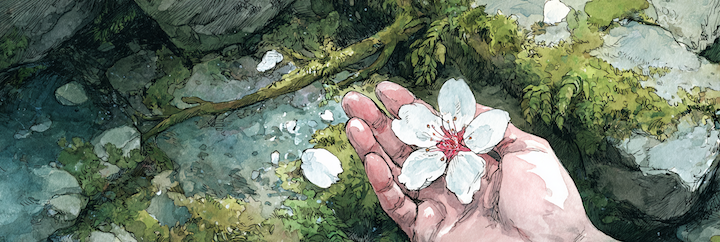

Someone Else's Spring

The petals were on the ground before I looked up. It had rained the night before, and Dalmajigil — "the road to greet the moon" — was covered in a wet layer of white and pale pink, so dense it looked like snow that hadn't committed. The trees above were sparser for it. What was still on the branches was backlit and trembling. What had already fallen was soaking into the stone and the moss on the tree trunks, going translucent at the edges.
I picked up one. White, with a faint blush of pink at the center where it had been attached to the flower. The rain had softened it into something that felt more like skin than leaf. It was beautiful.
I dropped into a café, ordered hibiscus tea, and sat in it. The petal was on the table next to the cup, drying at the edges. I opened my phone.
Somei-Yoshino(染井吉野), a cherry cultivar — fast-blooming, dense-flowering, perfected in Japan over decades. During the occupation, the Japanese colonizers had planted them across Korea: along roads, in parks, around public buildings. This was the colonizer's aesthetic stamped onto the colony's spring.
After liberation, Koreans cut them down.
In the 1980s, the local government in Busan planted cherry trees along Dalmajigil to promote tourism. But the narrative around the tree had changed. Korea promoted the wang beotkkot — the King Cherry, native to Jeju Island — and made a bolder claim: that Japan's beloved Somei-Yoshino was actually descended from this Korean species. Japan's national flower was really Korea's all along. The scar could be rewritten as a theft recovered.
In 2018, genomic sequencing confirmed the two are unrelated. No shared ancestry. The Korean cherry is not the ancestor of the Japanese cherry. It's simply a different tree that blooms at a different speed.
The ones outside my window right now, cascading down toward the sea, are almost certainly Somei-Yoshino. The King Cherry grows slowly. When a city needs a hillside to perform in time for tourist season, it plants the one that delivers.

My first night in Korea, I took a taxi from Incheon Airport. It was late, raining. The car was immaculate, clean, modern, silent in a way that felt designed rather than quiet. We crossed the Incheon Bridge over the sea, and the high-rises along the reclaimed shoreline glowed with a cold, purple-gray light. The LEDs. The tinted glass. Everything had the same hue, as if the entire city had been color-graded.
In the subway, the same light. Purple-greenish, cool, clinical. When a train pulls in, a trumpet melody plays over the speakers — bright, brassy, marching-band urgent. People sprint from the escalators to the closing doors. Under that purple-green wash, everyone moving fast, faces composed, outfits precise. The women's makeup was not makeup in the way I understood it. It was engineering. Contour as architecture. Foundation as facade. Beautiful — genuinely beautiful — and the longer I looked, the more I could see where the work had been done.
That kept happening, the looking-longer thing.
Korea is a country that is immediately, strikingly good-looking. The second reaction is the recognition of how much work went into looking that way.
It feels like staring at a beautiful face until you start to see the surgical seams. The face is real. The beauty is real. The procedure is also real. These do not cancel each other out, but they don't sit easily together either.
I wore a Patagonia jacket, no makeup, no designer bag. I was not participating in whatever this was, and the system noticed. In shopping malls the sales agents rarely approached me. When people realized I didn't speak Korean, something shifted: a micro-withdrawal, a recalibration. I went to the same shabu place three times. Twice, there was a bad leaf in my vegetables. The third time, I got a free piece of tofu. I still don't know which of those was the real signal.
There is a Korean word — 한, han — that I won't pretend to translate. The closest I can reach from outside: a grief that was never discharged. It is not rage, which moves outward. It is not sadness either, which fades. 한 stays. It accumulates, layer on layer, because there was never a clean place to put it down.
I'm not Korean. I can't tell what's under the surface. I can only tell there is one, and that it feels the way a city builds on its own ruins. The old structure is still down there, still load-bearing. But the streets are new, and no one digs.
Cut the trees. Plant them back. Tell a story. Get disproven. Keep the pretty ones. Put on the face. Sprint for the train. The surface is not a lie. It's a practice, a daily, meticulous, exhausting practice of looking okay.

In Busan, I ate dwaeji gukbap — pork bone soup. A milky-white broth, dense with hours of boiling, served with rice on the side and a plate of raw garlic and salted shrimp paste. The bowl costs less than ten thousand won. It is not pretty. It fills you the way a meal fills you when filling is the entire point.
This dish exists because of the Korean War. In the summer of 1950, the North pushed south until almost everything was taken. Busan was the last city standing — the bottom corner of the peninsula, backed against the sea. The UN drew a defensive line around it, the Pusan Perimeter, and held. Half a million refugees crowded into a city that couldn't hold them. Busan became the provisional capital of a country that had almost ceased to exist.
The refugees had nothing. What they had access to was the refuse from American military bases: pork bones, scraps, the parts the soldiers didn't eat. They boiled them, for hours, until every trace of fat and marrow had surrendered into the water. That's the broth. That's the recipe. It hasn't changed much.
When the war ended, South Korea's per-capita GDP was roughly the same as Ghana's. Within a single lifetime, the country crossed from there into the ten largest economies in the world. No country in modern history has sprinted that distance faster. The grandmothers who boiled American pork bones because there was nothing else are still alive. Their granddaughters order the same soup at restaurants with wooden tables and warm lighting. It's a Busan specialty now, regional comfort food, listed in travel guides.
Meanwhile, every convenience store is a minor supermarket. The butter salt bread from the artisan bakery I kept going back to used more butter than any nutritionist would approve. Modern Korea is not scarce. But the memory of scarcity lives in the food, the way 한(han) lives under the makeup — wealth sitting on top of a poverty that's still warm to the touch.

From the café at the top of Dalmajigil, I could see three countries at once.
Below me, the cherry trees — Japanese. Along the path, a pavilion signed 海月亭 — Sea Moon Pavilion — in Chinese characters, not Hangul. Across the water, Haeundae Beach: high-rises, glass, construction cranes, the skyline of a city built on an American economic template.
Three dependencies. Three different flavors of not being fully your own.
Japan is the one Korea hates openly. The wound is legible: colonization, forced labor, comfort women, the trees. You can point at the scar. Every spring, the blossoms reopen it.
China is harder. China is the cultural motherboard. The writing system, the Confucian ethics, the court rituals — all Chinese in origin. When Japan invaded in the 1590s, it was the Ming Dynasty that sent troops. Korea's worst humiliation was resolved by its deepest dependency. Being rescued is its own bondage. You can't hate your rescuer the way you hate your invader, but you can ask him, politely, to stop calling you by the old name.
Korea's capital was 漢城 — Hanseong, "fortress of the Han" — for five centuries under the Joseon dynasty. That was the Sino-Korean administrative name, written in Chinese characters. But Koreans themselves had been calling it 서울 — Seoul, a native Korean word meaning simply "capital" — since at least the mid-Joseon period. After liberation, 서울 became the official name. Korea had already named itself. The problem was that Chinese speakers kept using the old name — 漢城, Hancheng — as if the Joseon dynasty had never ended.
In 2005, Seoul's mayor formally asked Chinese-speaking countries to switch to 首爾 — Shǒu'ěr — a new Chinese rendering that sounds like "Seoul" and whose first character, 首, means "head" or "first." A city asking to be spelled in the sound of its own name, not translated through someone else's script. The request was honored.
But the characters on the Sea Moon Pavilion are still there. Some things are too embedded to extract without pulling up the ground.
And then America. Military bases, economic reconstruction, pop culture, consumer infrastructure. The American footprint is enormous, but nobody is cutting down American things. Nobody is trying to prove that K-pop was actually invented in Korea, though the argument could be made. Why?
America doesn't subtract from Korean identity. Japan said: you are actually us. China's presence whispers: you grew from us. America says: you can become like us. The first two take something away from "I am Korean." The third builds on top of it. You can wear Nike and drive Hyundai and stream on platforms built from Silicon Valley blueprints and feel more Korean for it, because you're a Korean who made it.
But I wonder if this is the dependency that runs deepest — precisely because no one resents it. Seoul's cold light, its skyscrapers, its surgical beauty standards, its compressed work culture ... whose template? The entire operating system of Korean modernity is American-derived. But it was adopted voluntarily, internalized so completely that it passes for native.
Chinese characters on a pavilion — you can see them, so you can fight them. Japanese trees in your park — you can see them, so you can cut them down. The American things don't look like things. In Seoul, dentist ads flag "(from USA)" in English, as a credential. The apartment I'm renting in Busan has "Made in Korea" engraved on the kitchen sink. The toilet is stamped American Standard — so is the shower. You don't cut down a toilet. You sit on it every morning, and it has already learned the shape of you.
But there is something else here that isn't a dependency at all.

On the subway in Seoul, in a McDonald's in Busan, I kept seeing young men in military uniforms — crew cuts, pressed fatigues. They looked like college students who'd been pulled out of their lives and dressed in someone else's clothes, which is exactly what they were.
Every Korean man serves. Not because of Japan, or China, or America. Because four hundred kilometers north of this café, across a line four kilometers wide and more than seventy years old, is the other half of Korea. I cannot see it from here. Nobody can, not really. Every Korean man does his military service against a brother he will never meet. Every news cycle contains at least one sentence about the North. Every identity on this side of the line is built in the shape of an absence.
This is about what Korea is missing from inside itself, and what that missing half keeps doing to the half that remains. The first three you can push against. The fourth you can only wait out.
And waiting, across two generations and counting, has become its own kind of patience. Or its own kind of 한(han).

I walked back down Dalmajigil as the light was going soft. The petals on the ground had dried into the stone. Some were caught in the moss on the tree trunks, white on green, placed there by nobody. The sea breeze was pushing the last blossoms sideways instead of straight down. They're supposed to fall at five centimeters per second — terminal velocity in still air. But the air here was never still.
At the bottom of the hill, I looked back up. The trees were half-bare and still beautiful. Next week they'll be entirely green, and no one will walk this road until next April. Somewhere on Jeju, the King Cherry is probably blooming too — slower, sparser, to a smaller crowd. It doesn't perform as well. It's just a tree, being a tree, on its own island.
The ones here are someone else's. They were cut down once, and planted back, and given a story that didn't survive the lab. But they bloom anyway, every spring, indifferent to who claims them. The tourists come. The photos are taken. The petals fall at whatever speed the wind allows.
I kept one in my palm all the way back to the hotel. White, a little wrinkled from the rain, pink only at the innermost point. It was beautiful the way this country is beautiful — genuinely, and with the seams showing, and impossible to put down.